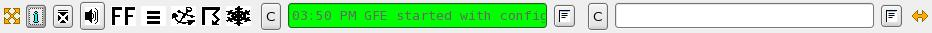

The GFE Reference Guide describes GFE features by menu, dialog, or other component. Its purpose is to supplement the GFE Training Guide for day-to-day operation.
The reference manual is divided into several sections:
GFE Startup Instructions and Options
describes the options to start up the GFE, the splash screen, and entering the username and configuration file information.
User Interface Menus, Button Bar, and Status Bar
describes the menu
options, button bar actions, and the message status bar.
 |
Main Menu |
| Button Bar | |
|  | AlertViz |
User Interface Dialogs
describes the various dialogs, including the color table editor, that are used in the GFE.
 |
|
Popup Menus
The Popup Menus section describes
the
popup menus for each of the major components of the GFE.
Smart Tools and Procedures
The Smart Tools and Procedures
section
describes the baselined smart tools and procedures that are delivered
as part of the
GFESuite.Misc. Reference Items
Misc. Reference Items that describe other features of the GFESuite.